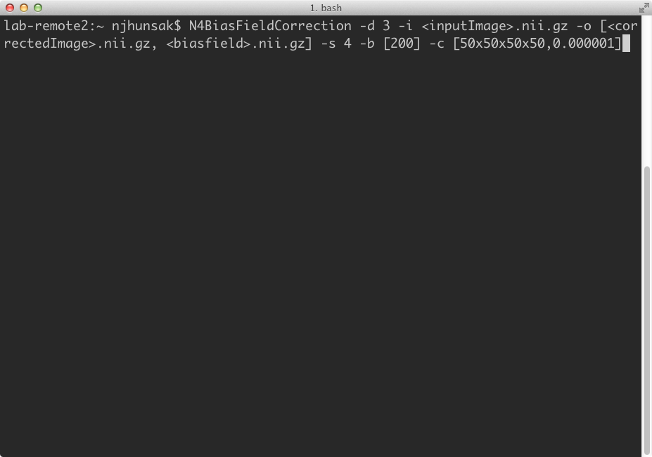
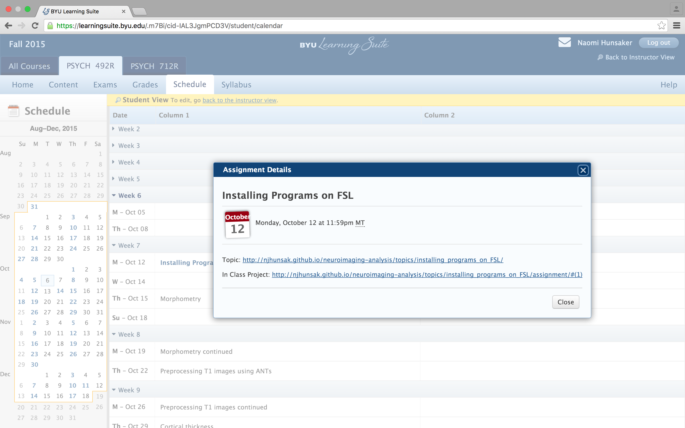

Interaction with the supercomputer is typically performed with command line tools. The command line tools can be run via a command prompt, also known as a shell. SSH is used to establish a secure shell with the supercomputer. In general, users should log in via the hostname ssh.fsl.byu.edu.
ssh {username}@ssh.fsl.byu.edu
where {username} is your NetID. Programs can be tested from the interactive nodes, but anything left running for more than an hour will be killed automatically.
First make sure you are apart of the fslg_byustudent group. You can check which groups you belong to by typing:
groups
Create an apps directory in your home directory and go to that directory. First make sure you are in your home directory:
pwd
/fslhome/<username>/
Next, make the new directory and go to that directory:
mkdir apps
cd apps
The apps can be found in the fslg_byustudent group:
rsync \
-rauv \
~/fsl_group/fslg_byustudent/apps/ \
~/apps
I always like to add the option --dry-run before submitting an rsync to make sure the files I want to copy are the ones being copied.

For most of the neuroimaging programs we use, we need to set the environmental variable. The variable simply tells the computer the location of all the executable files for an application.
For every open shell window, you can set the environment variable, but this is tedious if you are constantly using the program.
export ANTSPATH=/usr/local/antsbin/bin/
PATH=${ANTSPATH}:${PATH}
You can automatically set environment variables when a new shell window opens as well.
To edit text files directly in a shell window:
vi ~/.bash_profile
To enter into insert mode, type a.
Change username and type the following into your bash_profile:
```
# ANTS ENVIRONMENTAL VARIABLES
export ANTSPATH=/fslhome/
ARTHOME=/fslhome/
FSLDIR=/fslhome/
export FREESURFER_HOME=/fslhome/
To enter into command mode, press the esc key. To save the file and exit out of vi text editor, type :wq<Return>.
